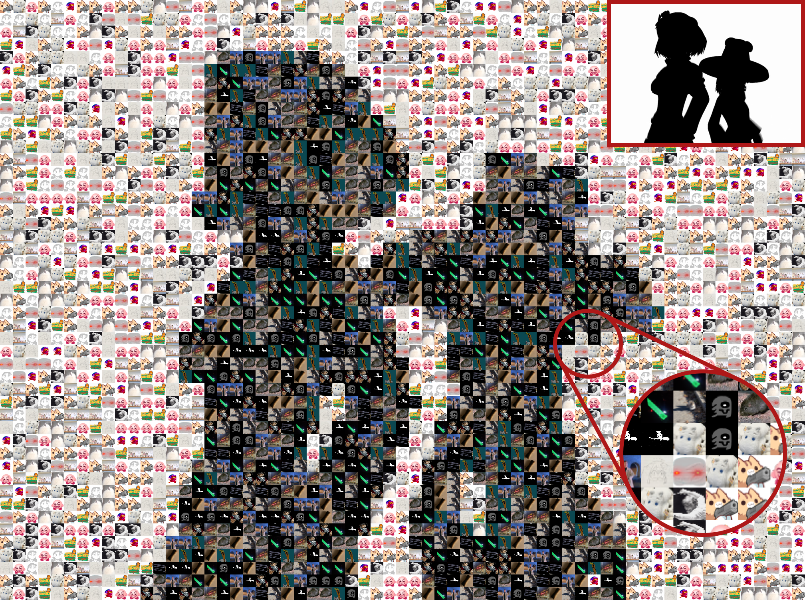
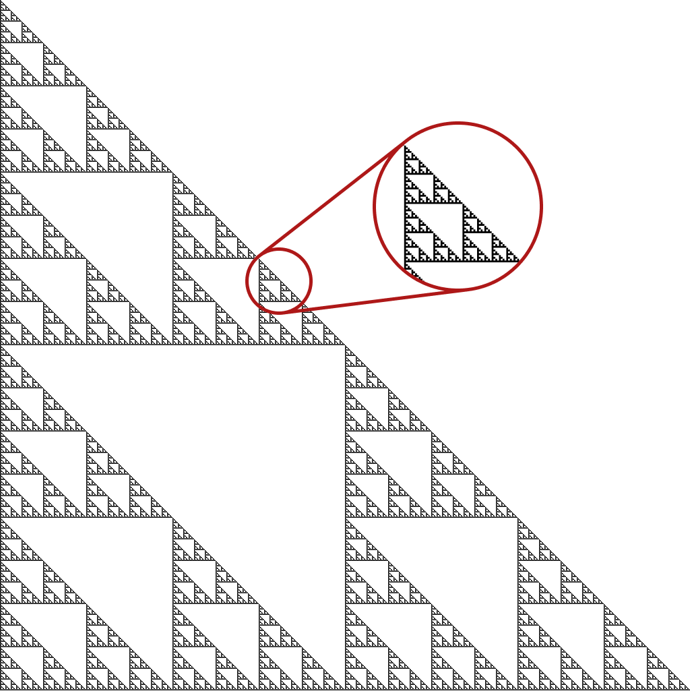
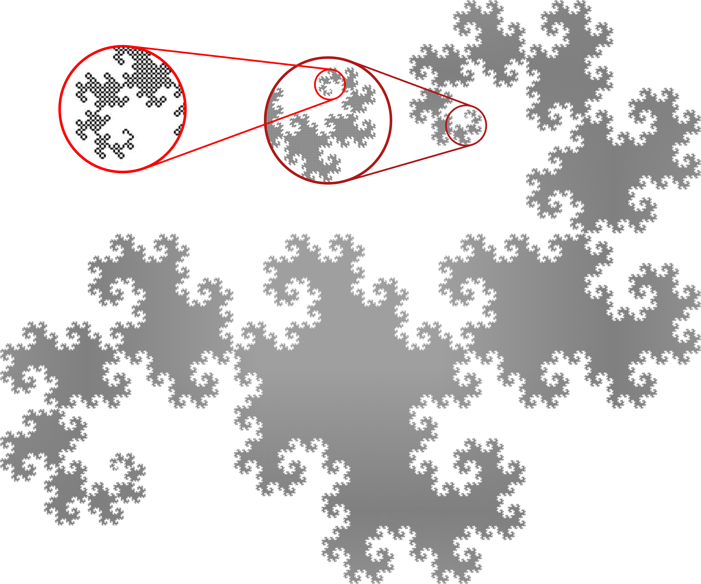
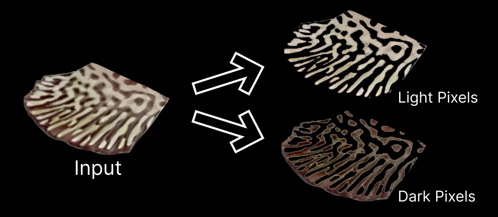
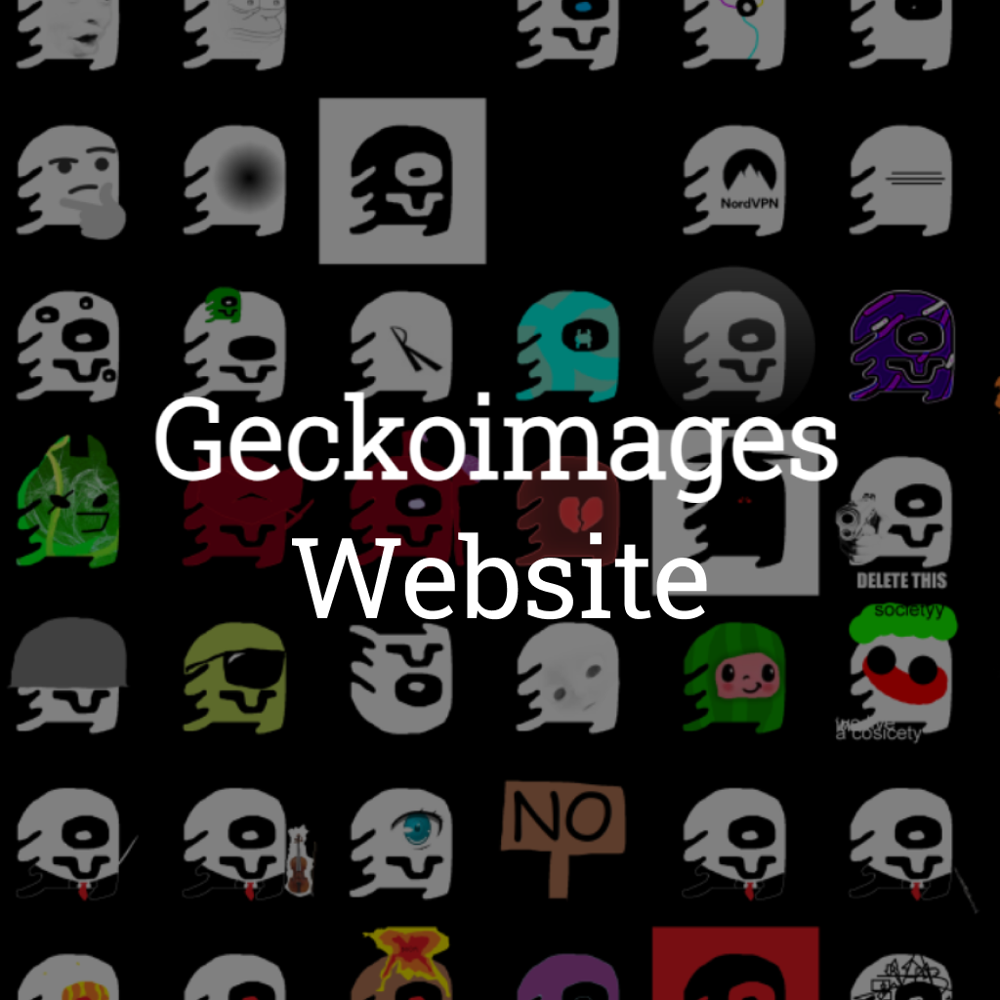
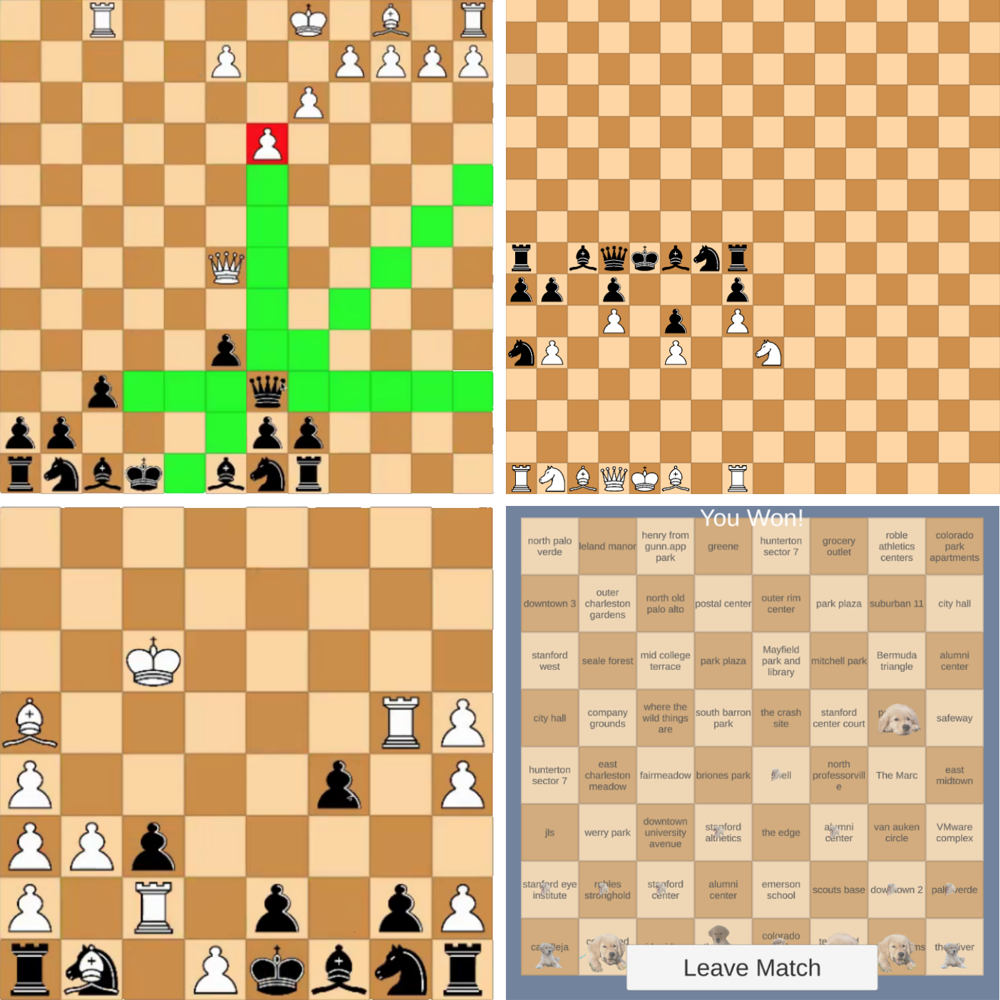
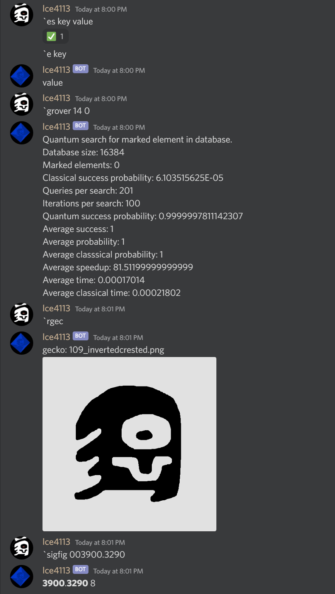

Engineering
Coding
Art
Engineering
Coding
Art
My computer science related projects. I first learned how to code using Unity during the pandemic in the 9th grade. Since then, I have been branching out and improving my skills. I am a long time member of the United Computations Club at Gunn, and I have been an organizer for their annual GunnHacks hackathon since 10th grade. At Ward Melville, I have been participating in the Computer Science Club.
Currently, I am familiar with, in order of competence: C#, Unity, C, HTML CSS JS, Python, and a bit of Kotlin.

A large collaborative Christmas gift for the year of 2022.
Every year at Gunn High School, the orchestra holds a white elephant gift exchange. My friend is known for going above and beyond every year, and this year (2022), we needed to top everything so far. The year prior, he, another friend, and I recorded a cover of "Fallen Down" from Undertale. This year, we wanted to make a full on music video of the famous song, Bad Apple!!, with everything being recreated by us. Creating the video was obviously my part, given my experience with making Bad Apple. How I decided to do it this time, was to collect a few "light" and "dark" images from everybody participating in the project, and then using them as pixels in the Geckoinator9000 I created earlier.

However there was a problem with that; because of how the Geckoinator works, it would only pick the darkest and lightest of the images and nothing in-between. So, I actually needed to write a new program. I took the original code, and modified it to first filter the input images into "light" and "dark", then the pixels of each frame into either "light" or "dark", then randomize which respective input image replaces the pixel. I then ran the program in batches of 1000 frames a day. Then, ffmpeg the frames together and we had the video done.
For the music, we decided to arrange a nonet, with a singer, 5 violins, 2 cellos, and a table as percussion. Over a weekend, I started off the arrangement by creating the skeleton of the score and all the main rhythms and melodies. Then my friend did all the polish and fixed all my mistakes as well as adding percussion. We then distributed the sheet music to the 9 participating musicians. I recorded the Violin V part and when everyone was done recording, another member edited and mixed the tracks together. My final task was to make a credits frame, which I did in Figma. For white elephant, we also pulled part of my geckoroll video to insert at the end. Then the video, audio, captions, credits, and geckoroll, were combined together to produce the final video. Due to its refusal to embed properly, please use the link below to watch the video.
A motion sensing light switch.
My second project with my Arduino. After figuring out how to use a servo for my gecko mister project, I discovered that I could flip switches with the same servo. In the basement of my house, there is a annoyingly positioned switch at the bottom of a staircase; because that is a frequently travelled part of the house, I decided to install a motion detector at the switch to turn on the light as soon as anyone approached.

I wired up the design using an arduino as the core. Then, I added two buttons which would be an on/off switch and a button which turns off the motion detector. After wiring the electronics, I designed a 3D printable shelf and box to mount everything in. I used some double-sided tape to mount everything in the basement.

Two fractal generators in C.
When I was taking CS50x, I was introduced to the concept of recursion. With this new knowledge, I wondered if I could use this to make some fractals. The first one I wanted to try was a Sierpinski triangle. After finishing the CS50 assignment for the week, I got to work on my generator in C. The generation method I went for was duplication, I took the previous shape, and added on two more copies of it below. Ultimately, it was a pretty simple project that I was able to finish in an afternoon, and I would leave it at that for some time.
After more than a year, I was messing around with C during a CS club meeting. I tried to recreate my triangle program, but I failed to make it work. To make up for the failure, I decided to try another fractal. This time I aimed for the much more difficult dragon curve to recreate. Like the first, I would use C for added challenge. It took me a whole entire 5 days to complete. Unlike with the first fractal, I had no idea where to start with the dragon curve. Eventually I settled on using a rotational method to create the fractal, but many more problems arose. With enough focus, I noticed some patterns in the iterations when I drew them out, and I found a method that worked.

With a method figured out, it was mostly trivial to implement it into code. By the morning of day 5, I essentially had finished the program. It worked for all iterations I tested, up to 20. I did attempt to run 25 iterations, but even after 2 weeks of non stop processing, it did not even get close to finishing. A nice future goal would be implementing parallel processing to hopefully speed up the program.
As the final touch to the programs, I made a C# script that converted the ascii outputs of the C code into pixels on an image which greatly improved their viewability.
A pixel counting program optimized for fish.
The lab that I had been designing 3D printed parts for needed to determine the ratio of light to dark pixels on the fin of a fish. First, I made the application in C#, using my experience I gained with my geckoinator project, I created a simple console application which could output results of an entire folder of images to a spreadsheet. However, the application only worked on windows because of the image library I used. To make sure everyone in the lab could use it, I rewrote the application in JS and hosted it on Github. Even though it lost a bit of functionality along the way, it still outputted consistent results which were used to conduct research.

A rapidly developed automatic gecko mister.
With an impending one week trip to London coming up, I began to worry about my geckos not getting enough moisture. Fortunately, I had been learning Arduino recently, and I thought about using one to activate a spray bottle pointed into my geckos' cage. With less than a week left to produce and test the device, I had to work fast. I used a combination of old parts from other projects and new parts. The arduino mounted on the body of the spray bottle would turn a servo every 30 minutes. The servo was attached to the spray bottle with zip ties and pulled the trigger with a steel wire. the entire assembly would hang on the top of the gecko cage aimed downwards. In the few days left, I would run it overnight to test how much water it used. It turned out to be fairly efficient, only using a fraction of its maximum capacity. On the day of my departure, I filled the bottle completely and started the contraption. Every 3 hours, it would also reboot in case the arduino ran into a problem.

When I returned from London, it was still going with around a quarter of the water left. My geckos were also alive and doing fairly well. I dismantled the device to use the spray bottle and arduino on other projects.

An evolutionary solution to the bin packing problem.
For my case project, I needed to know how many wood planks I needed to buy. I knew the sizes of all the final pieces I needed, but I had to fit those pieces onto the planks in a way to minimize the amount of planks used. This turned out to be an application of the "bin packing problem", and I did some research into possible solutions. The solution I used was a genetic algorithm. I wrote the code in C# in about a day. The algorithm got an answer of 7 planks, which after checking with another program, was indeed the minimum amount of planks needed. From this project, one of my main takeaways was how a genetic algorithm could be used to solve difficult problems, without actually "solving" them.

A customizable mosaic maker.

With the already massive amount of geckoimages, I wanted to do something using the entire collection. However I did not know what, and it eventually came down to whatever would let me play Bad Apple using them. I settled on creating a mosaic maker which replaces pixels in an image with the geckoimage that closest matches the pixel's color. It also works with theoretically any set of images as long as there are enough of them.

After the basic framework was finished, I introduced a feature to improve the quality of the images using Floyd-Steinberg dithering. I also introduced batch processing and multithreading in order to be able to process videos, and of course...I would probably consider this one of my if not the most technically challenging programs I have ever written. This used a lot of skill involving array processing and algorithms I learned from CS50x.
This very website!
This is the product of over a year of development, designs, and redesigns. This journey technically started when I took Cs50 in the summer of 2021. The second to last assignment was to make a homepage for yourself using HTML, CSS, and JS. The page I designed at the time was not really a serious attempt at a homepage, and more of a testing ground. The most impressive part of the website was playing Bad Apple in ASCII complete with synced audio. You can find that version of the website here. Some time later, I returned to start a serious attempt at a personal website. Before I could get started though, I wanted to have a design down. At the time, I was into the art-deco style, and wanted to try to emulate that in the design. My first few designs were were focused on blending the content more like a poster than a website.

Unfortunately, my artistic talents were not sufficient for such a complex design. So, I was back to the drawing board. I decided to keep the theme of unique coloration with a deep orange background and blue-red balls as the central element. This version is still up here. I am still relatively proud of this version of the website, especially of the spheres. When the window was wide enough, the pattern would actually repeat itself using some CSS trickery. The projects section also got its general design and categories in this version. Slowly, I continued to improve the design.
However, because of the complex JS and code involved, this iteration of the website was slow and resource intensive. The projects section was also outdated. The third and current version of the website began with design once again. This time, I wanted to simplify things. I decided to split each category into its own page to make organization more clear. For the new color scheme, I used a mint green background, and white accents. Originally, I was going to use a list type structure for the projects, but it did not work out very well. After extensive versions, I finally settled on the current square tile style with pop-up window description. All designs can be found in the Figma. Implementing this website should have been relatively easy, but it became a nightmare. First, I decided to not use JS at all, and everything had to be HTML CSS. This was the biggest head scratcher of the project. Very few people have attempted to do what I set out to do, probably for good reason too. Somehow against all odds, I ended up with this completely functional website, with no JS! By now, my projects list had grown substantially. I had over 60 different projects that all needed descriptions, links, and photos. This was the other nightmare. If I were to do this completely in the IDE, I might even say it is impossible. Instead, I created a spreadsheet and wrote out all the information there. Based on this, I wrote another program to convert the spreadsheet into HTML, which could then be copy pasted into the website; and finally, here we are.
Website Github • Website (this) • Cs50 Website • Old Website Github • Old Website • Figma • Spreadsheet • Translator Github

A collection of software for the Gecko Collection.
After the Gecko Collection started to grow beyond the 400 mark, some software integration was necessary. The first integrated software to be completely was Geckobot. With help from a friend, we used Google Drive API to fetch a local copy of the drive folder. Geckobot had simple searching, browsing, and even sent users daily images on a subscription service. I used the experience I gained from Geckobot to eventually build a standalone website for browsing the collection. This was complete with filtering, sorting, and searching.
I ran into the upload limit on Firebase for the images though. To move the images off of Firebase, I made a locally hosted API which the website would use. The API is coded in C# and fetches images from Google Drive like Geckobot. I was able to eventually get my API onto an https connection and update my website to pull from it. This had the benefit of being accessible for other projects on the internet.
Website • Website Repo • API • API Repo
A web app for my new school.
After seeing the success and utility of UGWA and subsequent rise of WATT at my old school, I wanted to create a similar utility at my new school, Ward Melville. Before school began, I quickly made TheWard with some basic features, like schedule and assignments. Throughout the year, I upgraded it with a club list, bell, and a calendar. Although I have attempted to make it public, not many people besides me use it.


Continuing the tradition of playing Bad Apple in strange or unexpected places! A collection of various tools I made for my bad apple related projects. Converts the frames of the video into ascii or other formats.
An experimental mobile app in Unity for my dad.
Walking home at night, he used an app on his phone to display a pattern to make himself more visible to cars. However he wanted to be able to make better patterns than the ones available in the app. Using my Unity experience, I made a mobile app made and displayed these patterns. It also had full control over color and speed the patterns player. I also managed to play Bad Apple on it.

A hackathon project related to chess in 9th grade.
Every year at Gunn High School, the United Computations club would hold GunnHacks. Gunnhacks is a hackathon where you can get together with up to 3 others and work together to create a project. Before I became an organizer for GunnHacks 8.0, a couple friends and I and participated in 7.0. For our project, we decided to make online chess, but with a twist! There would be a set of bonus rules which can be added to each game and combined to create a unique experience. My role in this project was management and music, and I also contributed to the code, art, design, and ideas. Eventually we had generated over 250 rules we could add, however only 15 would be added in our final version.

For music, I composed 3 tracks in a swing style. Originally I planned to record the tracks with my violin, but due to the time constraint I used the default piano sound. As part of management, I organized and typed up the Devpost page. Even though we did not place in the competition, we enjoyed working on the project together and produced a product that we are proud of.

A Discord bot that was one of my first coding projects, created in 9th grade.
I created Geckobot back in 9th grade as an activity for the United Computations Club at Gunn High School. This was my first real experience coding outside of Unity and I would use this as a tool to help me understand C# better. Geckobot started as a bot that saved and sent text using key value pairs. Eventually the bot would include Gecko Collection Integration, DecTalk text-to-speech, Significant Figures Counting, some limited quantum computing using Q#, and more.

A video game centered around an escaped gecko in California, started before 9th grade.
After beginning to code with Unity, this was my first project using it. Intended to be a rhythm game combined with a platformer. Unfortunately this project never got properly finished, the current prototype demonstrates the basic mechanics and a sample of a level. Although the game never got finished, most of the game was already planned out, like the core mechanics, story, and music.

Also, no geckos were harmed in the making of this game.